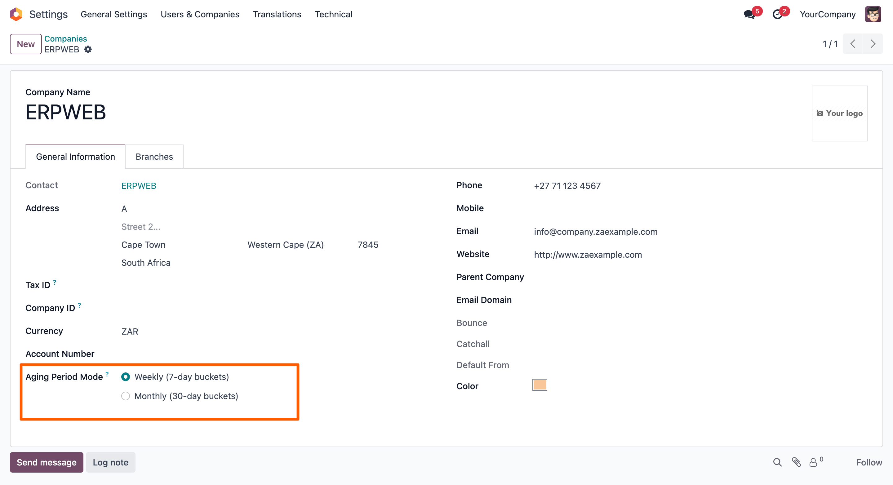
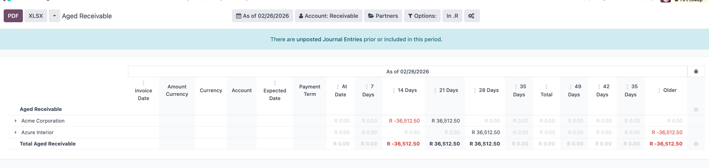
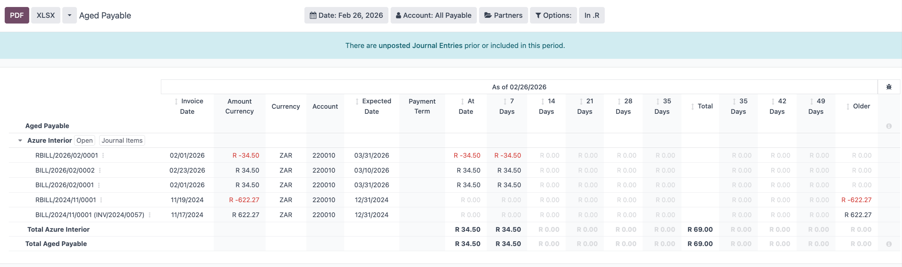
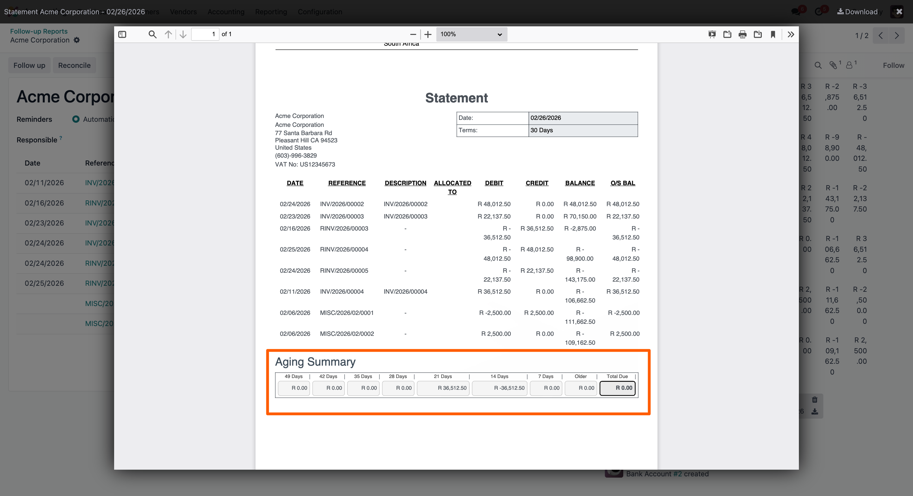

Enhance Odoo’s standard follow-up system with configurable aging buckets and advanced partner balance tracking. Organize outstanding receivables and payables based on your company’s credit policies and improve collection efficiency.
Define aging periods based on your business requirements and credit control policies.

View customer outstanding balances based on company-specific aging configuration using Odoo’s native report.

Monitor supplier dues with flexible aging periods without modifying standard accounting behavior.

Generate clear partner follow-up reports to improve collection and reduce overdue balances.

Need customization or assistance? We’re here to help.
Contact Us